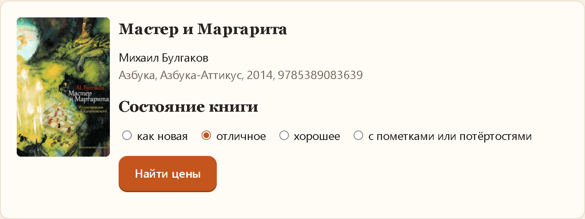
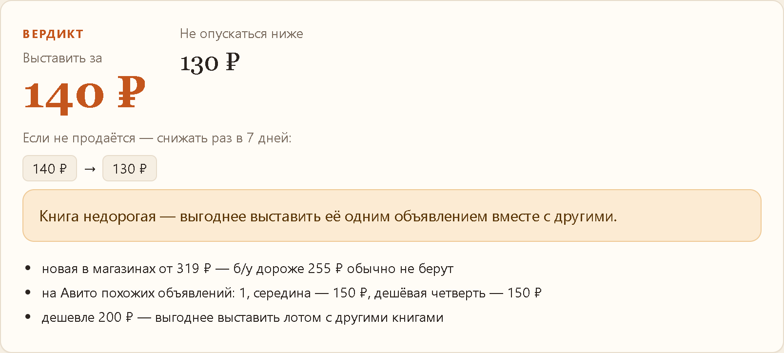
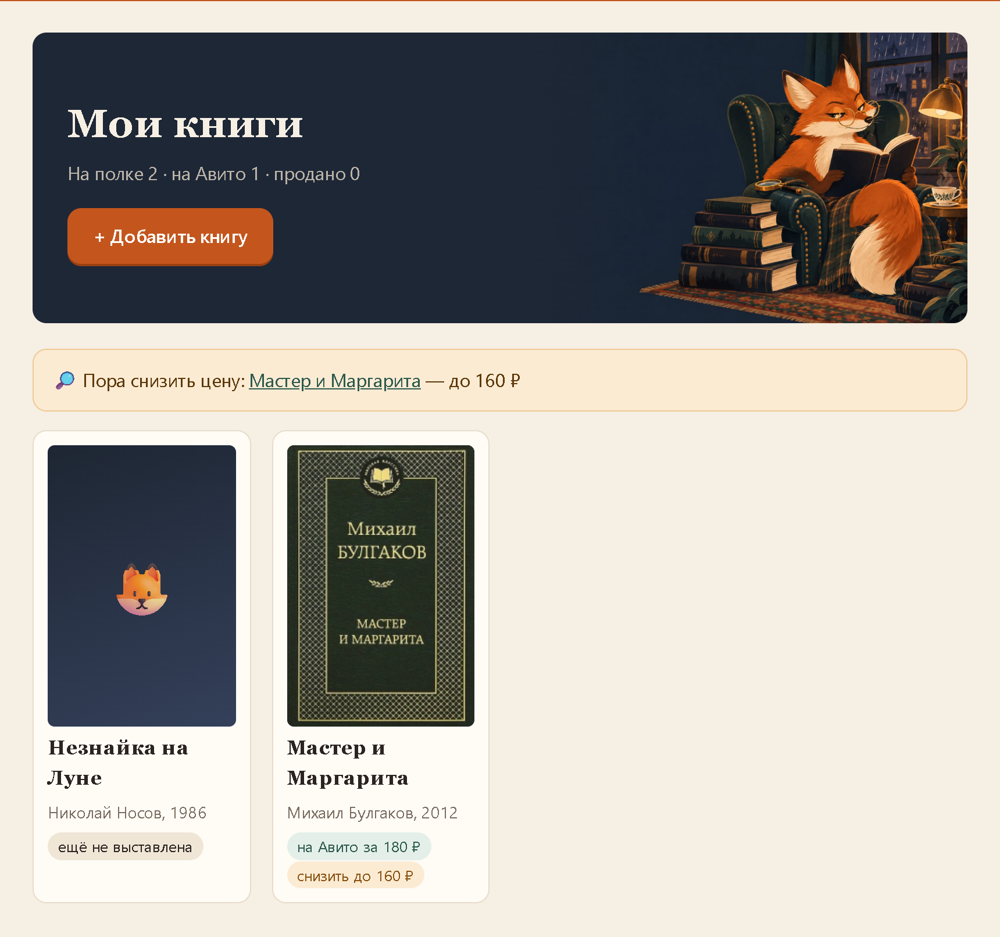

Лисья оценка книг: программа подсказывает, за сколько выставить книгу на Авито и как снижать цену, если она не продаётся. Работает на Windows 10 и 11, нужен только интернет.
BookPrice-….zip по ссылке, которую вам прислали. Он окажется в папке «Загрузки».BookPrice.exe в распакованной папке BookPrice.BookPrice не удаляйте. Если переложили её в другое место — удалите старый ярлык и откройте BookPrice.exe снова: ярлык создастся заново. Ваши книги при этом не пропадут.

